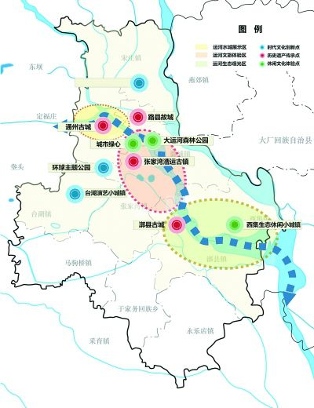

《通州区大运河文化带保护建设规划》《通州区大运河文化带保护建设三年行动计划（2020年-2022年）》昨天正式发布。承载千年历史的北运河通州段将在2022年基本建成城市副中心的“黄金水道”和“城市名片”；到2025年再现大运河北首盛景。
《通州区大运河文化带保护建设规划》系统梳理了城市副中心大运河现状，深入研究了美国伊利运河、法国米迪运河的保护发展经验，从文化、生态、旅游、开放四个层面，历史、自然、世界、未来四个维度，提出了四大战略定位。
四大战略定位分别是连通古今的文化魅力之带，打造凝聚悠久历史、荟萃古今文明的“历史文脉”；连通自然的生态品质之带，打造蓝绿交织、水城共融的“生态水脉”；连通未来的产业创新之带，打造白天繁荣、夜晚繁华的“经济动脉”；连通世界的协同发展之带，打造持续迸发新意、推动时代进步的“发展主脉”。
在发展目标方面，规划明确了四个阶段的中长期目标：到2022年，基本建成城市副中心的“黄金水道”和“城市名片”；到2025年，再现大运河北首盛景；到2035年，引领京津冀，进一步发挥示范带动和战略支撑作用；到2050年，成为中国文化与世界文明交流的重要承载地。
在空间布局方面，提出了“一河、三区、多点”的发展格局。“一河”即以大运河河道及两侧为大运河文化带规划主体部分。“三区”即运河水城展示区、运河文旅体验区和运河生态观光区。“多点”：一是时代文化创新点，主要包括宋庄艺术创意小城镇、台湖演艺小城镇、张家湾设计小镇、环球影城主题公园等；二是历史遗产传承点，主要包括通州古城、路县故城、漷县古城、张家湾漕运古镇等；三是休闲文化体验点，主要包括西集生态休闲小城镇以及张庄村、儒林村、马头村等一批特色古村落等。
《通州区大运河文化带保护建设三年行动计划（2020年-2022年）》以规划为依据，对规划任务进行了细化、量化、具体化和项目化，自2020年至2022年，将分步骤、分阶段推进落实。
湖南文化产业网版权所有 (c) All Rights Reserved.
未经湖南文化产业网书面特别授权，请勿转载或建立镜像